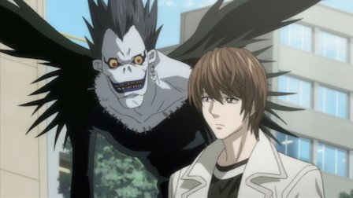

Episodes
Season 1

1. Rebirth
Brilliant but bored high school student Light Yagami suddenly finds himself holding the power of life and death in his hands.
2. Confrontation
While the world's criminals continue to drop dead, L meets by computer with representatives from various nations.
3. Deadlings
Ryuk, the Shinigami, or god of death, who dropped the Death Note into the human world, warns Light that someone is on his trail.

4. Pursuit
Light--now known to the world as Kira--tests the Death Note to understand the scope of its powers by killing off six convicts in various ways...

5. Tactics
Soichiro Yagami demands to meet with L in person when he finds out that L has secretly brought FBI agents into Japan.

6. Unraveling
Light meets a woman at the Police Department with an urgent message for the Kira task force.